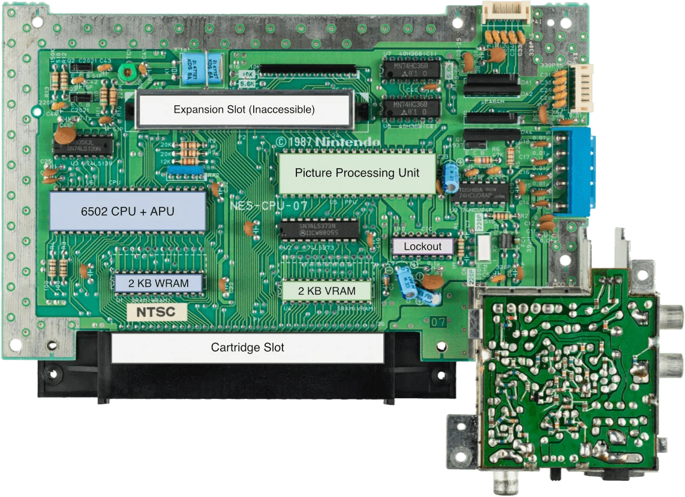
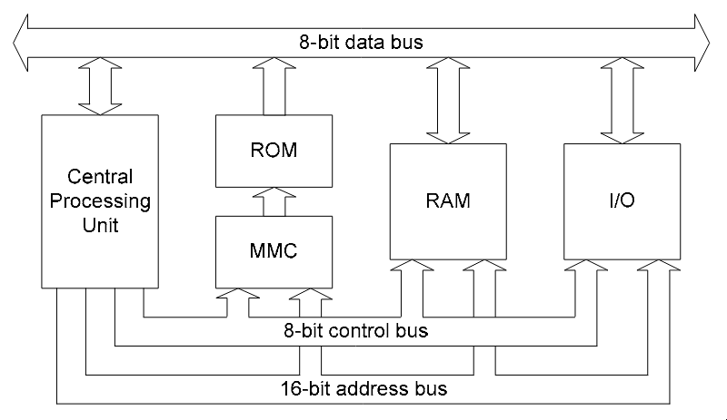
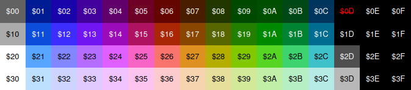
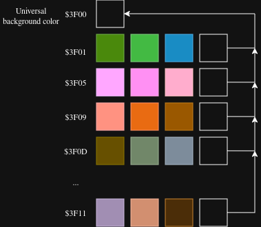
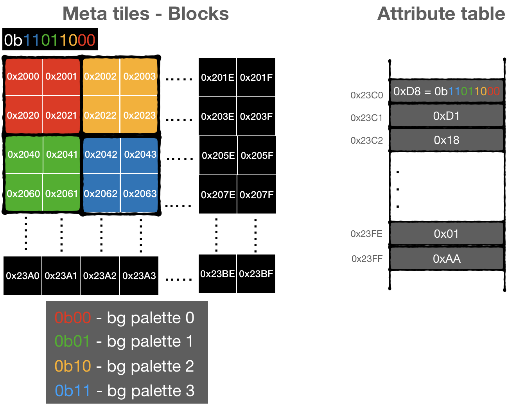

NOTE: This is not a complete technical overview of the NES. These are personal notes on the NES and its technical specifications, which is updated as my understanding improves and as development on my NES emulator progresses.
I have recently started working on a NES emulator in Go (Veyra). This led me to explore multiple different resources to understand how the NES works under the hood. The following content serves as an aggregated view of all those resources. All references material are linked at the end.
Brief about NES

Labelled NES motherboard figure. Credits: Rodrigo Copetti
The NES (or) Nintendo Entertainment System was a 8-bit home video game console and majorly it consisted of the following hardware components:
CPU - The NES used Ricoh 2A03 (based on MOS 6502), which is used for all the game logic.
PPU - The NES used Ricoh 2C02 which was a dedicated graphics chip responsible for rendering the background and sprites at a resolution of 256x240 pixels, with a palette of 54 colors.
APU - The 2A03 CPU has builtin capabilities for audio processing. It has 5 sound channels - two pulse waves, one triangle wave, one noise channel and one DMC channel.
Memory - The NES has a 2 KiB of internal work RAM (WRAM) connected to the CPU and a 2 KiB of inteneral video RAM (VRAM) dedicated for storing the graphics data.
Cartridge - The NES games were distributed in the form of cartridges, whose buses directly connect with the CPU. The chip within the cartridge majorly contains program ROM (PRGROM), additional RAM to extend WRAM and battery-packed RAM chips for storing saves.
Mappers - The NES used a 16-bit address bus so it means it could only address 64 KiB of data and excluding the memory-mapped hardware, it could only address 49.97 KiB of actual data, which severly limits the size of the games. To overcome this problem, mappers were developed. Mapper is an additional chip which is included in the cartridge which sits in between the memory chips and the console's address lines and it switches the bank of data on the fly - basically memory switching circuits.
CPU
The NES used a variant of the standard 6502 processor, it was the Ricoh 2A03. It is an 8-bit processor and follows little-endian format, i.e. the least significant byte is stored at the lowest memory address. Some of the major differences between the standard 6502 and the Ricoh 2A03 are that the latter could serve as both a pseudo APU (audio processing unit) and a CPU, and it did not support binary-coded decimal.
The CPU accesses memory through buses. The memory within the NES can be split into three major parts:
Cartridge ROM
Internal RAM of the CPU
I/O registers - NES uses memory-mapped I/O, i.e. data can be transferred among devices by writing to a
particular address in memory

The above diagram shows that the processor system has three buses via which different components communicate with
each other. Here is what each one of them does in brief:
8-bit data bus - Carries the data which is being read or written. It is bidirectional in nature.
16-bit address bus - Carries the 16-bit address where the CPU is trying to read/write.
8-bit control bus - Carries signals like READ, WRITE, RESET,
IRQ (interrupt requests). It is used to determine what kind of operation is being executed.
As the NES used a 16-bit address bus, it could support 64 KB of memory with addresses from 0x0000 to 0xFFFF. The following image shows the memory map of the CPU, which shows how the 64 KB is split and how various information is laid out in memory.
CPU memory map
Address range
Description
$0000-$07FF
2 KiB internal RAM (WRAM)
$0800-$1FFF
Mirrors of $0000-$07FF
$2000-$2007
PPU registers
$2008-$3FFF
Mirrors of $2000-$2007
$4000-$4017
APU and I/O registers
$4018-$401F
Unused
$4020–$5FFF
Expansion ROM (used in very few games)
$6000-$7FFF
Cartridge RAM (SRAM)
$8000-$FFFF
Cartridge ROM (PRGROM)
RAM
0x0000 to 0x1FFF contains the CPU's RAM. 0x2000 in decimal is 8192, which would translate to 8 KiB, but an interesting part regarding this is that the NES has only 2 KiB. The usable RAM is present from 0x0000 to 0x07FF, which is then mirrored three times to create 8 KiB in the memory map. The reason for this is mirroring. If 0x0000 and 0x1FFF are represented in binary:
0x0000 = 0000 0000 0000 0000
0x1FFF = 0001 1111 1111 1111
The address decoder logic to determine whether the RAM was being accessed was just a simple 3-input NOR gate to check whether the upper three bits (A15, A14, and A13) of the address are all zero or not. This leaves 13 bits to work with, and \(2^{13}\) = 8 KiB. The CPU has 2 KiB of internal RAM because A12 and A11 are ignored. If 0x0000 to 0x0800 had been chosen for RAM in the memory map, then the address decoder logic to determine whether RAM was being accessed would require checking whether A15, A14, A13, A12, and A11 are all zero. At the time when the NES was being developed, only 3-input and 4-input NOR gates were available. Due to technology constraints and to keep the product's cost low, A12 and A11 are simply ignored, which causes mirroring.
The RAM memory map is divided into multiple sub-regions as follows:
0x0000 to 0x00FF refers to the zero page, as they represent the first 256 bytes, and some instructions use zero-page addressing modes for quicker reads and writes
0x0100 to 0x01FF contains the stack of the CPU
0x0200 to 0x07FF contains the actual RAM, which is 1.5 KiB
0x0800 to 0x1FFF contains mirrors of 0x0000 to 0x07FF
Stack
6502 processor has a stack which acts similar to any other stack based on LIFO (last in, first out) principle. On every push, the value of stack pointer is decreased and on every pop, the value of stack pointer is increased. The initial value of stack pointer in NES emulators is 0xFD. It is used to the three phantom stack pushes done during the reset sequence. Over here, phantom push means that the data isn't actually written to memory.
Power-on: SP = 0x00
Phantom push #1 (PC high byte): SP = 0xFF
Phantom push #2 (PC low byte): SP = 0xFE
Phantom push #3 (processor status): SP = 0xFD
I/O Registers
0x2000 to 0x401F contains memory-mapped I/O registers. PPU (picture processing unit, more on this in later sections) related registers are present in 0x2000 to 0x2008, and a similar mirroring effect can be seen here as well. The remaining I/O registers are present in 0x4000 to 0x4020.
Expansion ROM
0x4020 to 0x5FFF contains cartridge hardware extensions such as additional program ROM, extra sound
hardware (extra sound channels), custom registers, etc.
SRAM
0x6000 to 0x7FFF refers to SRAM, which was generally used to save game state.
PRGROM
0x8000 to 0xFFFF contains the game's actual code, i.e. raw CPU instructions which are iterated and executed by the CPU at each step. This region is memory-mapped with the cartridge's ROM. It is split into two 16 KiB banks (similar wording appears in the iNES file format). If there is a game whose code is more than 32 KiB in size, then the MMC comes into play. MMC, or memory management controller, swaps different chunks of ROM into the CPU's addressable window on the fly and determines which banks are to be loaded into memory. It sits between the CPU and ROM, intercepting the signals and remapping them.
Registers
The 6502 has three special-purpose registers (program counter, stack pointer, processor status) and three general-purpose registers (accumulator, X register, Y register).
Program counter (PC) - it holds the 16-bit address of the next instruction which is to be executed
Stack pointer (SP) - it holds an 8-bit value which acts like an offset from 0x0100. The initial value is 0x01FF, and when a byte is pushed to the stack, the stack pointer is decreased and vice versa
Accumulator (A) - it is an 8-bit register which stores the value of arithmetic and logic operations
Index register X/Y (X/Y) - these are 8-bit registers which are typically used as counters or offsets for certain addressing modes
Processor status (P) - it is an 8-bit register which contains eight single-bit status flags
Bit 7 (negative, N) - set if the result of an operation is negative, i.e. bit 7 of the result is 1
Bit 6 (overflow, V) - set if the result of a signed arithmetic operation overflowed, i.e. the result is too large for a signed byte. It is determined by looking at the carry between bits 6 and 7 and between bit 7 and the carry flag, i.e. whether the carry-in bit and carry-out bit for bit 7 are different or not
Bit 5 (unused) - always set to 1
Bit 4 (break, B) - it acts like a transient signal in the CPU. If the flags were pushed while processing an interrupt, then it is 0 and 1 when it is pushed by instructions (BRK, PHP)
Bit 3 (decimal mode, D) - when the decimal mode flag is set, the processor will obey the rules of binary-coded decimal during arithmetic operations. It is not used in the Ricoh 2A03 as it does not support binary-coded decimal
Bit 2 (interrupt disable, I) - set when the SEI instruction is executed
Bit 1 (zero, Z) - set if the result of the operation was 0
Bit 0 (carry, C) - set if an operation produced a carry/borrow
Addressing modes
The 6502 provides multiple different ways to address particular locations present in memory.
Zero page - Zero page addressing takes a single operand which acts like a pointer to an address in the zero page where the data to be operated on can be found
Indexed zero page - Indexed zero page addressing takes a single operand and adds the value of an index register (X register for zero page, X and Y register for zero page, Y) to it to give an address in (0x0000 to 0x00FF), i.e. the addition wraps around
Absolute - Absolute addressing takes two operands which combine to form a full 16-bit address that contains the data to be operated on. The sequence of operands follows little-endian format, i.e. least significant byte first
Indexed absolute - Similar to indexed zero page, indexed absolute takes two operands and the address is then added to the value of the index register to obtain the final address
Indirect - Indirect addressing takes two operands which combine to form a 16-bit address which stores the least significant byte of another 16-bit address where the data to be operated on is stored
Implied - Instructions which do not require access to operands stored in memory
Accumulator - Instructions which directly operate on the accumulator register use this addressing mode
Immediate - Immediate addressing mode takes a single operand which is an 8-bit constant
Relative - Relative addressing mode takes a single operand which is a signed 8-bit constant used to update the value of the program counter if a certain condition is met. The condition is dependent on the instruction, and the program counter increments by 2 (one for the opcode and one for the operand) regardless of whether the condition is met
Indexed indirect - Indexed indirect (or pre-indexed) addressing mode takes a single operand and then adds it to the X register (with wraparound) to give the address of the least significant byte of the target 16-bit address
Indirect indexed - Indirect indexed (or post-indexed) addressing mode takes a single operand which gives the zero-page address of the least significant byte of another 16-bit address, which is then added to the Y register to give the target address
Instructions
There are 56 official 6502 opcodes and most of them are pretty straightforward to implement. The only tricky one is ADC, mainly due to the way overflow (V) flag is updated over here. Refer to this blog post by Ken Shirrif to properly understand how 8-bit addition works on 6502 - www.righto.com/2012/12/the-6502-overflow-flag-explained.html
Apart from the official opcodes, but NES supports 256 opcodes in total i.e. there are over 200 unofficial opcodes, most of which are combinations of the official opcodes. Refer to the Illegal opcode list by Joakim Atterhal.
PPU
NES' PPU is one of the most interesting component, as it'll show how much data can be stored in such a small memory space and how to efficiently use it as well. The instructions present in the game's code (PRGROM) can only communicate with the CPU, so to draw the graphics, the CPU communicates with the PPU such a set of registers present in between $2000 to $2007.
The way rendering takes place in PPU is very closely related to how scanline rendering works in CRT TVs. PPU produces 262 scanlines per frame and upon entering 241 scanline, NMI interrupt is triggered marking the start of vblank. During this period, the program updates graphics data for next frame, while rendering itself occurs outside of the NMI during the visible scanlines.
PPU registers
PPUCTRL ($2000, write) - It is the control register of PPU which contains the settings related to rendering, scroll position and vblank NMI etc.
PPUMASK ($2001, write) - It controls the settings related to rendering of sprites and background.
PPUSTATUS ($2002, read) - It is the status register of PPU and it stores the state of rendering-related events, such as whether it is vblank right now.
OAMADDR ($2003, write) - It is used to write the address of OAM (object attribute memory) which is to be accessed. PPU contains OAM in its internal memory which stores the state of sprites which is to be rendering. More about layout of OAM in the later sections.
OAMDATA ($2004, read/write) - It is used to write and read data from OAM. On writes, OAMADDR is incremented. Generally OAMDATA isn't used as OAM is meant to be updated during vblank and it would be very slow to update OAM via OAMDATA as it updates one byte at a time and a single vblank period wouldn't be sufficient
PPUSCROLL ($2005, write) - It is used to change the scroll position, telling PPU which pixel of the nametable is to be selected.
PPUADDR ($2006, write) - CPU writes to VRAM by first loading the VRAM address into PPUADDR and then writing data repeatedly to PPUDATA.
PPUDATA ($2007, read/write) - Upon each read/write to PPUDATA, PPUADDR is incremented and the amount of increment is present within PPUCTRL.
OAMDMA ($4014, write) - OAMDMA (object attribute memory direct memory access) is used to quickly copy a page from CPU memory to OAM using DMA technique. While writing to OAMDMA, the CPU is suspended.
PPU memory map
Address range
Description
$0000-$0FFF
Pattern table 0
$1000-$1FFF
Pattern table 1
$2000-$23BF
Nametable 0
$23C0-$23FF
Attribute table 0
$2400-$27BF
Nametable 1
$27C0-$27FF
Attribute table 1
$2800-$2BBF
Nametable 2
$2BC0-$2BFF
Attribute table 2
$2C00-$2FBF
Nametable 3
$2FC0-$2FFF
Attribute table 3
$3000-$3EFF
Unused
$3F00-$3F1F
Palette RAM
$3F20-$3FFF
Mirrors of $3F00-$3F1F
Frame construction
The resolution of screen on NES is 256x240 pixels and the image is rendered on the fly using scanline rendering, which is used in CRT TVs i.e. the PPU renders the image step-by-step with the CRT's beam, hence in the original NES PPU there is no framebuffer. Most of the modern day emulators instead use a framebuffer equivalent for rendering the graphics, as it is much simpler in terms of development.
Each frame is built on top of tiles which are 8x8 pixel maps, which is stored in the character memory (CHRROM) chip in cartridge. It is also referred as pattern tables. The below image is visualization of one of the pattern tables of PacMan, you can notice some of the parts of the player and the text glyphs:
One half of the CHRROM is used for storing the background tiles whereas the other half is used to store the character sprites. To know the offsets for both of them, check the 3rd bit (character sprites' offset) and 4th bit (background tiles' offset) in PPUCTRL status flag. If the value of those bits are 1 then it is $1000 else 0.
Each pixel in a tile is made up of 2 bits, so a tile is made up of 8 * 8 * 2 bits = 16 bytes per tile. The CHRROM is mapped to $0000-$2000 address range on the PPU memory map i.e. 8 KiB worth of CHRROM. If each tile takes up 16 bytes then maximum number of tiles which can be packaged with a game are (8 * 1024)/16 = 512 tiles. The 2-bit value per pixel is used to encode its color.
Consider a single row of a tile i.e. 16 / 8 = 2 bytes. The 2 bytes are split up into upper and lower halves respectively where byte at the lower position is the upper halve. This doesn't follow little-endian format.
The way color of a pixel is determined for the nth pixel from left on that row is by combining the nth highest bits of upper and lower halves. For the leftmost pixel, it would be 0b10. This could be represented using the following logical expression, which would be ran per row:
It might seem that only 4 possible colors are supported by NES because for every pixel 2 bits are used to encode its color, but a much wider range of colors are supported.
The below figure shows the all the NES supported colors with the corresponding values using which the color is referred to in code/memory. In total, NES supports 52 colors but a single screen can only use 25 colors simultaneously. The colors which are currently being used are stored in the palette table/RAM in the PPU.

In palette table, 4 palettes are dedicated for background and 4 for sprites i.e. 13 colors for background and 12 colors for sprites. The way the colors are laid in the palette RAM is in a linear fashion, where $3F00 contains the value of the universal background color, and after that group of every 4 four bytes is a palette. The last byte in every palette is dedicated for the background, which is connected to the $3F00.

So, if we know the palette index then it shouldn't be hard to compute the RGB value of every pixel in the frame. If palette index is known then set of the four colors would be:
If it was character sprite then start would have been 0x11 + (paletteIdx * 4), to skip the universal background color + 4 background palette groups.
The missing component now is how to find out palette index?
Once the palette is computed, assigning which color to use from the palette is again pretty simple as it depends on the value of color, from the previous code snippet. If it is 0, then use the first color from the slice. If it is 1, then use the second color from the slice and so on. It is also important to note that a single tile can be drawn using only one palette.
The missing piece right now how to get the palette index? And this is where the graphics rendering pipeline splits and it becomes different for background tiles and character sprites.
In case of background tiles, the palette index for a metatile is present within the attribute table, the series of 64 bytes after each nametable. A metatile is 2x2 tile. The palette indices for a group of 2x2 metatiles is managed by a single byte present in attribute table. In the below figure, the first value in attribute table 0 is 0b11_01_10_00 and it starts assigning the palette indices for each metatile from bottom right and traveling to top left.

How palette index is assigned for background tiles. Credits: @bugzmanov
But in case of character sprites' whose graphical data is stored within OAM data, the palette index is directly mentioned. OAM data is a 256-byte long array where each tile is assigned 4 bytes:
Byte 0 - Y position of the top left corner of the sprite
Byte 1 - Tile index, referring to the tiles stored in CHRROM
Byte 2 - Attributes, where 0th and 1th bit combined gives the palette index and 6th and 7th bit are used to flip the sprite horizontally/vertically respectively
Byte 3 - X position of the top left corner of the sprite